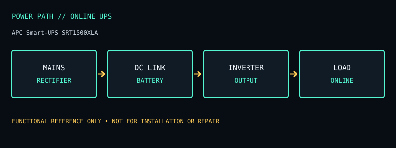

[ ONLINE UPS // IDENTIFIED MODEL ]
APC Smart-UPS SRT1500XLA
Online double-conversion UPS, 1500 VA / 1350 W, six NEMA 5-15R outlets; runtime is load dependent. This record documents the named model only; check the unit nameplate and its matching manufacturer documentation before service or installation.

ARCHIVAL IDENTIFICATION: Preserve the complete SKU, suffix, region, date code, manual revision, installed battery part number and observed condition. Similar model names do not prove identical hardware.
Model specifications & service record
| Subcategory | Online UPS |
|---|---|
| Topology / function | Online double-conversion (VFI) UPS: the inverter continuously supplies conditioned output; the rectifier/charger and inverter remain in the conversion path. |
| VA and W ratings / outlets | 1500 VA / 1350 W; 120 V North American model; six NEMA 5-15R output receptacles on the SRT1500XLA product listing. |
| Battery / replacement | Internal, replaceable sealed lead-acid battery module; the SRT family supports external battery packs only where the exact SKU documentation approves them. Battery service is not permission to open the energized chassis. |
| Runtime / operating conditions | No fixed runtime applies. Schneider/APC runtime graphs are load- and battery-dependent; external battery options can extend runtime only when listed for this exact SKU. Use the model-specific calculator/table at the measured watt load and battery condition. |
| Interfaces / monitoring | LCD status/control panel, SmartSlot for a compatible optional management card, and USB/serial signaling as specified by the exact SRT revision; confirm host shutdown support and accessory compatibility. |
| Electrical safety / limits | 120 V only; high fault energy and stored energy are present. Observe the installation/user manual, grounding, clearance, and battery-replacement procedure. Verify whether the site requires 5-15P versus other input arrangements and never infer outlet count from another SRT1500 variant. |
| Revision / variant identification | SRT1500XLA is a 120 V extended-runtime tower SKU and is not interchangeable with SRT1500XLA-TW, SRT1500XLI, SRT1500RMXLA, or newer SRT revisions. Check the model, input plug, outlet panel, battery label, and manual revision. |
Service & archival notes
- Record nameplate and battery labels before removal; separate measured behavior from manufacturer ratings and record load, input conditions, temperature and test date.
- Do not open an energized unit. Mains equipment and batteries can retain hazardous energy; have battery installation, disposal, and electrical work performed according to the product manual and local rules.
- For archival units, document missing covers, damaged cords, alarms, failed indicators, battery age/swelling/leakage, and any substituted part. Do not return a damaged unit to service.
- Product and manual links below are the primary reference for the named regional model. Verify exact revisions rather than transferring ratings from a similarly named SKU.
Manufacturer sources
- Manufacturer product specifications — APC Smart-UPS SRT1500XLAModel-specific ratings, regional identity, configuration and available documentation.
- Manufacturer manual / product documentation and runtime referenceUse the manual matching the complete model code and revision. Runtime statements above describe manufacturer chart/conditions where available, not a guaranteed result for an aged unit.